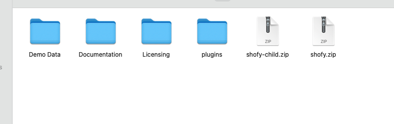
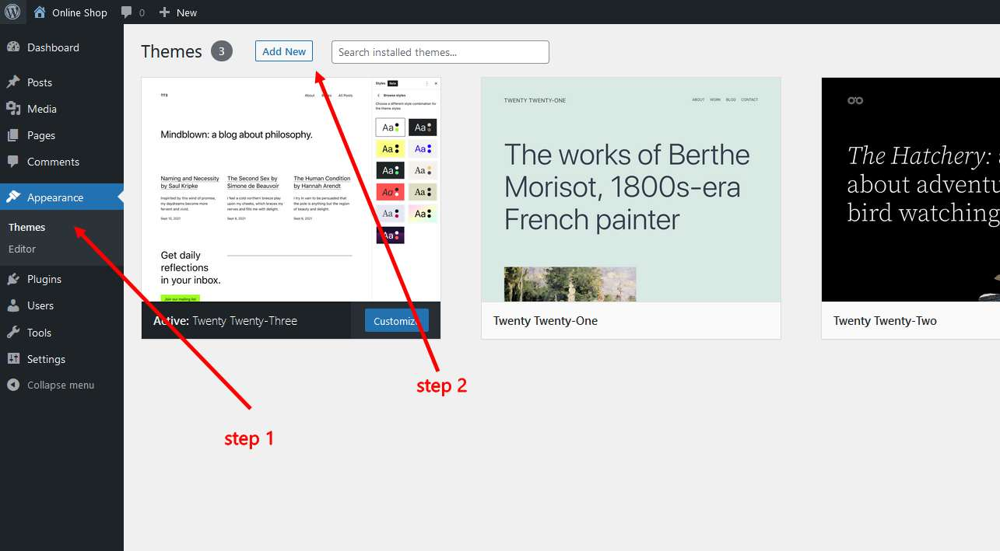
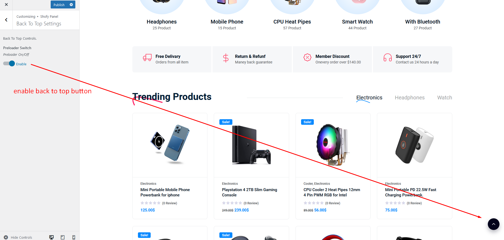

For any support please don't hesitate to contact us at
Support Center. We
provide 13 hours real-time support for our customers.
We would like to thank you for choosing Shofy - Multipurpose WooCommerce
Theme.
Shofy - Multipurpose WooCommerce Theme. This Theme comes with high-quality 5 Prebuild Home Pages and many built-in awesome inner pages. An WooCommerce Theme is a powerful tool for creating a professional and visually appealing online store. With a well-designed theme, you can quickly and easily build an eCommerce website that not only looks great but also functions seamlessly. These templates provide the basic structure and layout for your online store, including pages for product listings, shopping carts, checkout processes, and more. Whether you're just starting out with your eCommerce business or looking to revamp your existing website, an WooCommerce Theme can be a valuable resource for creating a high-quality online store that meets your unique needs
Getting started
You need at least WordPress version 6.0.0+ installed for this theme to work
properly. It is strongly recommended that you always use the latest stable
version of Wordpress to ensure all known bugs and security issues are fixed.
Other getting_started:
PHP version 5.6 or greater. But for maximum speed gain we recommend
you to use PHP version 7.3+.
MySQL version 5.6 or greater OR MariaDB version 10.0 or greater.
After purchasing Shofy theme on themeforest.net with your Envato account, go
to your
Download page. You can choose to download Shofy theme only (Installable
WordPress
Theme) or the entire Shofy theme package which contains the following files:

The contents of the theme package downloaded from ThemeForest
shofy.zip - An Installable WordPress Theme zip
file. this file you need to upload to WordPress.
shofy-child.zip - This file contains the basic
child theme that you can use with our theme. Just installing it
won’t hurt and in case you decide to make some changes/extend the
source code of the theme, it will be very helpful because it helps
not to lose your custom changes after updating the parent theme. More on child
themes
Plugins - This folder contains plugins required to
work with our theme.
Demo Data - This folder contains the demo content
file which will help you to import the demo manually.
Licensing - This folder contains the terms and
conditions of the license.
Documentation - This folder contains what you are
reading now :)
WordPress Installation
Please follow the instructions in the video to see how you can install
WordPress on your
hosting:
Important! if you download the All Files archive
from ThemeForest and try to upload it to your WordPress, you will
receive this error: Theme is missing the style.css
stylesheet. Please make sure you unzipped the main
archive and are uploading the correct file to your WordPress.
When you are ready to install a theme, you must first upload the theme files
and then
activate the theme itself. The theme files can be uploaded in two ways:
1. Using Theme
Uploader
Follow the steps as instructed in the images below:
From the dashboard go to AppearanceThemesAdd New Upload Theme
Click on “Choose File” and select
shofy.zip
Click on “Install Now”.
Active the Theme
N.B: All plugins must be installed and activated if you want your site
to look exactly like demo.

Appearance → Themes → Add New Click on “Choose File” and select shofy.zip
and Click on “Install Now”.Active Shofy Theme
2. Using FTP Clients
Follow the following steps to upload your theme using FTP clients:
Use an FTP such as FileZilla and go to your WordPress installation
director
Navigate to /wp-content/themes/ folder and upload
the theme folder there
Log in to your WP Admin Dashboard and open the AppearanceThemes menu
You will now see Shofy Theme listed among the other
themes. Click on Activate and you’re done!
3. Updating Theme
Occationally we provide updates which includes new features and bugfixes.
Updating WordPress theme is standard WordPress functionality.
Before Updating Theme:
** Before updating please make sure to keep a
backup of your installed theme and plugins (eg. Shofy Core) to be on
safe side.
After completed the above steps successfully, Navigate to
Appearance -> Themes. Here you'll see an "Update now" link
beside your theme. Click on that link and your theme will be updated
automatically.
Here's a quick video tutorial explaining this method:
Method 2: By Uploading zip File
From WordPress Admin Panel, Navigate to Appearance -> Themes.
Activate any other theme (eg. Twenty Seventeen) than the current
one.
Delete Shofy Theme.
Now you have to upload the updated theme zip file. To do this,
Navigate to Appearance -> Themes -> Add New -> Upload. Go to
browse, and select the zipped theme folder. Hit "Install Now" and
the theme will be uploaded and installed.
Method 3: By FTP
Using your FTP client, navigate to "/wp-content/themes/" folder on
your server and delete the "Shofy" folder from there.
Now upload the latest non-zipped theme folder into that
"/wp-content/themes/" folder .
After Updating Theme:
** After updating the theme please update all
plugins which come with the theme.
4. Installing required plugins
Shofy theme requires a set of core and additional plugins to function
correctly. A plugin is an additional component that offers functionality and
features beyond a typical WordPress installation. Without them, most of its
functionality is not available. After installing the theme you will be
prompted to install the required plugins at the top of your dashboard.
From the dashboard go to Appearance Install Plugins
Toggle all the required plugins and hint “Install”;
The last step will be activating the plugins.
Click on the begin installing plugins link
to install all the required plugins.Select all and installSelect all and Activate
Importing Demo Contents
We are providing you two methods for importing demo contents: Automatic and
Alternative. You can follow either one of these methods.
One Click Method (Recommended): This method will remove all your
existing data, so use this method only in fresh website. This procedure
will be faster because you just have to do one click and then everything
will happen automatically. If you want an exact clone of demo website
without doing any manual configuration after importing data then this
method is appropiate for you.
Manually Import: Use this method only if:
Automatic demo import method fails ( Only few of our customers
like 5% have experienced this issue due to their hosting limits,
in that case we also provide free demo importing service if you
contact with us).
You already have a working website with existing contents(eg.
posts, pages etc).
1. One Click Method
Want to build your site like the demo? You can do it by only one click!
Note: Please remember that when you are done with
the demo import, your some existing settings will be replaced by the
demo contents Like: Your menu, Customizer. So it is recommended that
you should only do this in fresh site.
Ensure, that the One-Click Import plugin is
installed and activated;
From the dashboard go to Appearance Import Demo Data
Choose the demo you want to install and click on the
“Import” button below;
And change the permalink: From the dashboard go to
Settings
Permalink
go to Appearance -> Import Demo Data -> Click
on the "Import" button
Click "Yes, Import" Button Import Complete! Congrats,
your demo was imported successfully. You can now begin editing your
site.Change permalink
2. Manual Import
Please follow the instructions below:
Click switch to manual import from right corner.
Choose contents-demo.xml file for all content
import
Choose widget-settings.json file for widget import
Choose customizer-data.dat file for customizer
import
and last click Import demo data button
Note: We have added all the above files to the
Theme package -> Demo Data folder.
Click Switch to manualChoose all file and click the "import demo
data" button
Where Is My Purchase Code?
To learn about how to find
your purchase code. When you buy a product from envato you get a purchase
code. visit the following link:
To customize the menu and megamenu please login to wp-admin and navigate to
Dashboard
AppearanceMenus and follow the following
steps:
Change Site Title and Favicon Basic Site Setting
To change your Site title and Favicon login to wp-admin and navigate to Dashboard
AppearanceCustomizeSite Identity and follow the
following steps:
Change Global Colors
To change all global colors login to wp-admin and navigate to
Dashboard AppearanceCustomizeShofy CustomizerColors Options
and follow the following steps:
Change Logo
To change the site logo login to your wp-admin and navigate to
Dashboard AppearanceCustomizeShofy CustomizerHeader
and follow the following steps:
Change Typography
To change the typography of your site navigate to
Dashboard AppearanceCustomizeShofy CustomizerTypography
and follow the following steps:
Set Home and Blog Page
To set the home and blog page, login to wp-admin and go to
Dashboard Settings Reading and follow the following steps:
Theme Options
Header
To change Theme Options header navigate to
Dashboard AppearanceCustomizeShofy CustomizerHeader
and follow the following steps:
Header / Header layout
You can choose default header or elementor header
To change Theme Options navigate to
Dashboard AppearanceCustomizeShofy CustomizerHeader
and follow the following steps:
Header Topbar
Customize header topbar as you want by enable or disable the switches
Footer Layout
You can choose default header or elementor header
To change Theme Options navigate to
Dashboard AppearanceCustomizeShofy CustomizerFooter
and follow the following steps:
Footer & Footer Copyright Info
To change Theme Options navigate to
Dashboard AppearanceCustomizeShofy CustomizerFooter
and follow the following steps:
Archive (Blog / Archive)
To change Theme Options navigate to
Dashboard AppearanceCustomizeShofy CustomizerBlog Settings
and follow the following steps:
Settings (Error Page Settings)
To change Theme Options navigate to
Dashboard AppearanceCustomizeShofy CustomizerError Page
and follow the following steps:
Breadcrumb Settings
To change Theme Options navigate to
Dashboard AppearanceCustomizeShofy CustomizerBreadcrumb
and follow the following steps:
Offcanvas Settings
To change Theme Options navigate to
Dashboard AppearanceCustomizeShofy CustomizerOffcanvas
and follow the following steps:
Prealoder Settings
To change Theme Options navigate to
Dashboard AppearanceCustomizeShofy CustomizerPreloader
and follow the following steps:
Prealoder Settings
To change Theme Options navigate to
Dashboard AppearanceCustomizeShofy CustomizerPreloader
and follow the following steps:

WooCommerce Archive
Change Shop Layout
To change Theme Options navigate to
Dashboard AppearanceCustomizeShofy CustomizerShop Setting
and follow the following steps:
Change Shop Layout
Change Product Grid Layout
Change Product Grid
Trending Badge Settings
Trending Badge Settings
Product Badge Settings
Hot Badge Settings
Free Shipping Bar Settings
Customize Free Shipping Bar
Product Single Settings
Customize Product Single
Add Coupon
Add New CouponCustomize Your Coupon
Add Shortcode to page
[shofy_woo_coupon_shortcode]
Elementor Widgets
Elementor Page Builder has a lot of built-in widgets by default. But for your
convenience we've created several custom Elementor Widgets that you can use
in your website and extend website functionality. You can find them under
Shofy Core section on Elementor edit mode.
Translating Theme
You can translate this theme to another language easily. You have to
translate several things for your website to work properly:
Theme: Shofy
Plugin: Shofy Core
There are many tools available for translation. But the easiest way is to use
plugin "Loco Translate". Using this plugin, you can literally
translate any WordPress themes or plugins if it supports translation.
--- Here's a step by step tutorial about translating any
themes and plugins using "Loco Translate":
Step 1: Install and activate plugin "Loco
Translate".
Step 2: Select the Theme or Plugin you want to
translate from "Loco Translate" menu.
Step a: Theme Translate
Step b: Plugin Translate
Step 3: Click on New language link.
Step 4: Select your preferred language, and also
select your location as "System". Then click on "Start Translating" button.
Step 4: Click on the "Sync" button for the first
time. Then start translating strings like the image below.
Here's a quick video tutorial about how to use Loco Translate:
404 Error in all pages
If you face this type of issue, please update your permalink. To update
permalink, navigate to Settings -> Permalink and then click on
Save Settings button.
17. Contact
If you face any issue please contact us at
Support Ticket. We
provide 15 hours real-time support for our customers.